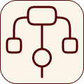
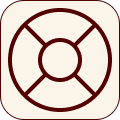
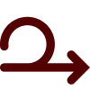

The Design Process
A transparent, human-centered roadmap that transforms ambitious concepts into high-performing digital products.
Discover
I start by understanding the product vision, user needs, and the core problem we’re solving.
- Understand the product vision and goals
- Identify user needs and pain points
- Clarify challenges and expectations
Research
I analyze competitors, user behavior, and market patterns to gather insights that guide the design direction.
- Review competitors and similar products
- Analyze user behavior and patterns
- Gather insights that guide design decisions

Structure
I map out user flows and create wireframes to build a clear and logical foundation for the product.
- Define user flows and key journeys
- Organize information and layout logic
- Create low-fidelity wireframes for clarity
Design
I convert ideas into polished, high-fidelity interfaces with clean visuals and consistent components.
- Build clean, high-fidelity UI screens
- Apply color, typography, and visual hierarchy
- Ensure consistency across all components
Prototype & Iterate
I create interactive prototypes, test the experience, and refine the design based on feedback.
- Create interactive prototypes
- Test flows and interactions
- Refine the design based on feedback

Deliver & Support
I prepare design assets for development and stay involved to ensure smooth implementation and improvements.
- Prepare assets and design documentation
- Collaborate with developers during handoff
- Review builds and improve based on user feedback
Fast & Reliable Delivery
Your project is handled with speed and structure, ensuring deadlines are met without sacrificing quality.
Clear Pricing Structure
Fair pricing that reflects the value of your project, no surprises or extra charge.

Continuous Refinement
Ideas evolve through consistent feedback and adjustments, ensuring the final solution is truly user-centered.
Frequently Asked Questions
It depends on the scope. As a guide, mobile app projects take about 6-8 weeks, website projects such as a responsive landing page about 4-6 weeks, and design systems or component libraries about 2 weeks. We agree a timeline together after the consultation call.
A short description of your project goals and vision, your target users, the key functionality you have in mind, your branding and visual direction, and any apps or websites you like for reference. Tell me which deliverables you expect (wireframes, prototypes, high-fidelity designs) and we'll take it from there.
Yes. If you have brand guidelines, I design within them, including colors, typography, tone and components. If you don't, I can help define a clear visual direction.
Yes. I design for mobile apps (Android and iOS) and responsive websites, including dashboards, onboarding flows and landing pages.
Yes. You're involved at key points, from the consultation call and project plan through prototype reviews, and your feedback shapes each round of refinement.
Ownership and file handover terms are agreed in writing before the project begins, so everything is clear from the start.
Ready to start your project?
Tell me about your idea and let's take the first step.